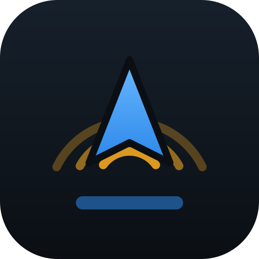

Västmanland
Logga in så följer prenumerationen och dina rapportpoäng med dig, oavsett vilken telefon du kör med.
Kontot behövs för att rapporter ska nå andra förare, och för att din prenumeration ska följa med om du byter telefon.
Inga rapporter i närheten just nu.
Ett läge i taget — kameran kan bara användas av en sak åt gången.
Rikta den blå rutan mot skylten. Läsaren tittar bara i rutan — gå närmare eller zooma tills skylten fyller den. Håll still en sekund.
Bakkameran filmar framåt genom vindrutan, med ljud. Lägg telefonen i hållaren med baksidan mot vägen.
Spelar in i loop och raderar det äldsta automatiskt, som en riktig dashcam. Vid en smäll låses filmen av sig själv — du behöver inte trycka på något mitt i en krock. Allt stannar i din telefon. Ingenting laddas upp någonstans, och du raderar själv när du vill.
Rikta rutan mot skylten
Appen zoomar själv tills skylten fyller rutan. Ställ telefonen i hållaren och låt den sköta sig.
Inga skyltar lästa än.
Listan ligger bara i minnet och töms när du lämnar läget. Inget sparas och inget skickas någonstans.
Inga klipp ännu.
Alla som kör med Polisvakt i Västmanland.
Inga meddelanden än. Säg något.
Volymen följer telefonens, och varningen kommer som ett trafikmeddelande — musiken dämpas och kommer tillbaka efteråt.
Alla behöver inte allt. Den som kör E18 varje dag kan kamerorna utantill och vill se dem på kartan utan att bli tilltalad.
Klickljuden är avsiktligt tysta och tystnar helt medan en varning läses upp.
Appen lär sig när du brukar köra och påminner dig att slå på den. Börjar bilen rulla med appen öppen men ljudet av säger den till direkt.
Varnar för halka och för vilt kring skymningen. Vägbanan kan ligga under noll trots plusgrader i luften — det är den situationen som fäller flest. Väderdata från SMHI.
En privat grupp för åkeriet, körskolan eller kompisgänget. Ni ser varandras rapporter utöver det vanliga flödet — men ingen utanför gruppen ser era.
Du är inte med i någon grupp än.
Kör provet med musiken igång, så hör du att den dämpas och kommer tillbaka — precis som ett trafikmeddelande på radion.
Säg till exempel: "Hej vakt … polis vid Dillos", "polis här", "polisen är borta", "tyst".
Appen varnar först vid 7 km/h över gränsen. Marginalen finns för att GPS-farten ligger några km/h fel och för att bilens mätare visar högre än verklig fart.
Vägdata hämtas automatiskt för området du kör i.
Rapportera utan att släppa ratten. En Bluetooth-dosa på ratten fungerar direkt. Bilens egna mediaknappar kräver att appen tar över mediakontrollen — då tystnar Spotify.
Telefonen känner en smäll långt innan du hinner trycka på en knapp. Vid kraftig inbromsning eller kollision låses dashcam-klippet automatiskt.
Samlar in…
De 10 som rapporterar mest under en månad får nästa månad gratis. Poängen belönar rapporter som andra bekräftar, inte flest rapporter.
Läser registreringsskyltar genom kameran. Väljs under Dashcam — kameran kan bara användas av en sak i taget, så inspelning och skyltläsning går inte samtidigt.
Läsaren visar en skylt först när två bildrutor läst samma sak. Motorn kan vara helt säker på ett felläst tecken, och det är det enda som skiljer en läsning från en gissning.
Egna registreringsnummer. Känner läsaren igen ett av dem markeras det grönt. Ett per rad — de sparas bara i den här telefonen.
Laddar…
Kameradata kommer från OpenStreetMap och täcker hela Sverige — 2 466 fasta kameror. Kör tools/hamta-kameror.ps1 för att hämta färsk data. Mobila kameror och sträckmätning finns inte i underlaget.
Platser du pekat ut på kartan. Appen kommer ihåg dem för alltid.
Sakerna som gör appen bättre i bilen. Inget går att beställa än — anmäl intresse så hör vi av oss när lagret är på plats.
Genomgången du fick när du skapade kontot. Visar varje knapp och när du använder den.
Låt någon skanna koden med mobilkameran så öppnas appen direkt hos dem. Ju fler som rapporterar, desto bättre fungerar den för alla.
Rötterna nertill är det som redan står stadigt. Uppåt växer det mot det som inte finns än.
Nykterhets- och drogkontroller. Appen känner igen dem i text och tal och vägrar lägga upp dem, oavsett om de kommer från en knapp, från rösten eller från Facebook-gruppen. Att hjälpa någon köra vidare berusad är inte vad det här är till för.
Register över civila polisbilar. Vi sparar inga registreringsnummer, bilmärken eller foton på polisfordon. "Civil"-rapporten visar att en civil bil setts på en plats, och försvinner efter 30 minuter.
Polisvakt Västmanland. Rapporter är användargenererade och kan vara felaktiga eller inaktuella. Du kör — appen gissar. Titta på vägen, inte på skärmen.
Kartdata och kameradata © OpenStreetMap-bidragsgivare (ODbL). Rutter: OSRM. Adressökning: Nominatim. Väder: SMHI.
Appen känner inte igen platsen. Peka på kartan så kommer den ihåg den för alltid.
Då startar den i helskärm och du slipper leta upp sidan varje gång.
Du har testat Polisvakt i 5 dagar. Fortsätt få röstvarningar för fartkameror och polis i Västmanland för 99 kr i månaden. Avsluta när du vill.
Mikrofonen är avstängd för Polisvakt, så talknappen kan inte användas.